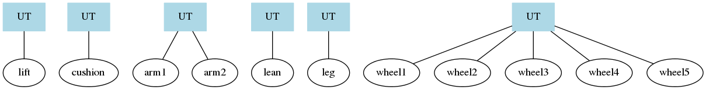

Reliable Code Construction
with cmockery2
Devconf - February 5, 2015
Luis Pabón
About Me
Luis Pabón
Principal Software Engineer @ Red Hat Storage
GitHub, IRC: lpabon
Introduction to programming by contract
Introduction to unit testing
Unit testing in C
Lab
Programming
by
Contract
What is programming by contract?
Programming by Contract
We implement programming (or design) by contract as a Hoare Triple:
{P} C {Q}
where {P} is the precondition before executing command C, and {Q} is the postcondition.
Unit Testing

What exactly is a unit test?
A good unit test is:
Automated
Consistenly returns the same result
Runs Fast
Readable
Maintainable
http://artofunittesting.com/definition-of-a-unit-test/
Example:
Car
You could build the entire car and then test

Result could be
Re-Think
Development
Break project into units to test
Example:
Chair
Possible chair test
test_chair()
{
assert(supports a person);
assert(move foard);
assert(move back);
assert(move left);
assert(move right);
assert(lean back N degrees without falling back);
}
Possible automated chair test
// Replace human with robot
test_chair()
{
assert(robot arm push down on chair with X Newtons);
assert(robot arm move chair forward 0.5m);
assert(robot arm move chair back 0.5m);
assert(robot arm move chair left 0.5m);
assert(robot arm move chair right 0.5m);
assert(robot arm lean chair back 25 degrees);
}
Those are
functional tests,
not unit tests
Possible chair unit tests
test_cushion() { ... }
test_arm() { ... }
test_leg() { ... }
test_leaning_assembly { ... }
test_lift { ... }
test_wheel()
{
Mock chair leg holding wheel();
exepect wheel pin to appear in Mock chair leg();
insert wheel into mock leg();
assert(simulate weight);
assert(clockwise rotation);
assert(counter-clockwise rotation);
assert(connector to mock chair leg);
}
Functional Test View
Unit Test View
Unit Test in C
cmockery2
C Unit Test Framework
GitHub: https://github.com/lpabon/cmockery2
Simple Example
hello_test.c
#include <stdio.h>
#include <stdarg.h>
#include <stddef.h>
#include <setjmp.h>
#include <inttypes.h>
#include <cmockery/cmockery.h>
void null_test_success(void **state) {
printf("Hello test world!\n");
}
int main(int argc, char* argv[]) {
const UnitTest tests[] = {
unit_test(null_test_success),
};
return run_tests(tests, "hello");
}Running hello_test
$ gcc -o hello_test \
hello_test.c \
`pkg-config --libs --cflags cmockery2`
$ ./hello_test
[==========] Running 1 test(s).
[ RUN ] null_test_success
Hello test world!
[ OK ] null_test_success
[==========] 1 test(s) run.
[ PASSED ] 1 test(s).
[ FAILED ] 0 test(s).
[ REPORT ] Created hello_xunit.xml report
Another Example
add.c
int add(int a, int b) {
return a+b;
}
add_test.c
int add(int a, int b);
void test_add(void **state) {
assert_true(add(0,0) == 0);
assert_true(add(1,0) == 1);
assert_true(add(0,1) == 1);
assert_false(add(1,1) == 0);
}
int main(int argc, char* argv[]) {
const UnitTest tests[] = {
unit_test(test_add),
};
return run_tests(tests, "add");
}
Running add_test
$ gcc -o add_test \
add.c \
add_test.c \
`pkg-config --libs --cflags cmockery2`
$ ./add_test
[==========] Running 1 test(s).
[ RUN ] test_add
[ OK ] test_add
[==========] 1 test(s) run.
[ PASSED ] 1 test(s).
[ FAILED ] 0 test(s).
[ REPORT ] Created add_xunit.xml report
Features
- Program by Contract
- Assert and memory checks
- Jenkins JUNIT format reports
- Mocking
Programming by Contract
#include <cmockery/pbc.h>
Post- and preconditions for applications
Cmockery PBC Macros
- REQUIRE() - Function precondition
- ENSURE() - Function postcondition
- INVARIANT() - Test object consistancy
These macros are just macros on top of assert()
These semantics are only be enabled during debug builds and during unit test runs
Example:
GlusterFS dict
Let's look at _dict_set()
static int32_t
_dict_set (dict_t *this, char *key, data_t *value, gf_boolean_t replace) {
...
}
With PBC
static int32_t
_dict_set (dict_t *this, char *key, data_t *value, gf_boolean_t replace) {
REQUIRE(key != NULL);
REQUIRE(this != NULL);
REQUIRE(value != NULL);
REQUIRE(1000000 > strlen(key));
REQUIRE(NULL != THIS);
REQUIRE(NULL != THIS->ctx);
REQUIRE(NULL != THIS->ctx->dict_pair_pool);
INVARIANT(_dict_invariant(this));
...
ENSURE(val == _dict_lookup(this, key));
}
_dict_invariant()
static void
_dict_invariant (dict_t *this) {
REQUIRE(this != NULL);
REQUIRE(this->refcount > 0);
REQUIRE(this->lock != 0);
REQUIRE(this->members != NULL);
}
Overrides
Cmockery provides support for overriding system calls like assert()
and memory management functions
Provided by <cmockery/cmockery_override.h>
which must the last #include in the application
Asserts
Here is an example application function calling assert
#include <cmockery/cmockery_override.h>
void increment_value(int * const value) {
assert(NULL != value);
(*value) ++;
}Asserts
Here we can test the assert is triggered
void increment_value_assert(void **state) {
expect_assert_failure(increment_value(NULL));
}
int main(int argc, char *argv[]) {
const UnitTest tests[] = {
unit_test(increment_value_assert),
};
return run_tests(tests, "assert_module");
}Memory Allocators
- Overrides
malloc(), calloc(), free(), realloc()functions - Leak detection
- Buffer overrun
Mocking
Mocking
- Used by linking mock functions instead of actual functions
- Cmockery provides APIs to check expected values
Mocking Example
a.c
static int
a(int x, int y) {
return double(x) + y;
}Place new mock double() in a_mock.c and build the test:
gcc -o a_test a_test.c a.c a_mock.c `pkg-config --libs --cflags cmockery2`Test
static void
test_a( void **state ) {
// Tells cmockery that the function 'double' will have a
// parameter 'value' with the value of '2'
expect_value(double, value, 2);
// Return '4' from the function 'double'
will_return(double, 4);
// Make sure that a() returns 8
assert_int_equal(a(2, 4), 8);
}Mock double()
int
double( int value ) {
// Check the argument is as expected
check_expected(value);
// Return what we had expressed in the test
return((int)mock());
}Lab
Download the code
$ git clone -b lab https://github.com/lpabon/cmockery2.gitPrepare the environment
$ sudo yum -y install libtool make autoconf automake gcc
$ ./autogen.sh
$ ./configure
$ ./make checkLab 1: Add PBC to
src/examples/hash.c
Add the following includes
#include <cmockery/pbc.h>
#include <cmockery/cmockery_override.h>Add REQUIRE and ENSURE to all API functions. Add REQUIRE() after variable initialization, and ENSURE() before last return.
Lab 2: Add Unit Tests to hash_create()
Open hash_test.c and add unit tests to hash_create(). You first may want to start by testing any REQUIRE()s. You can then test that NULL is returned when size is less than 1
Lab 3: Mock strdup
Rename strdup to test_strdup as follows:
#include <cmockery/pbc.h>
#include <cmockery/cmockery_override.h>
#ifdef UNIT_TESTING
#define strdup test_strdup
#endifCreate a new file called hash_mock.c and add the mock function test_strdup to that file. You can now use this function to test. Check the values passed to the mock function. By using mocks, you can now send back NULL from the mock function.